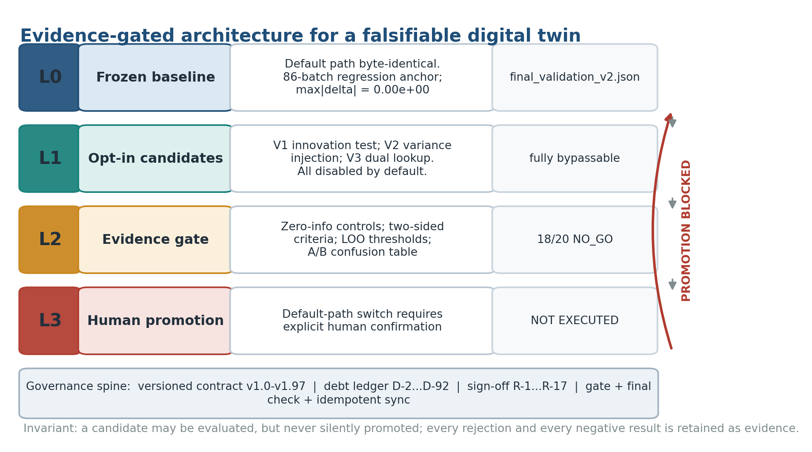
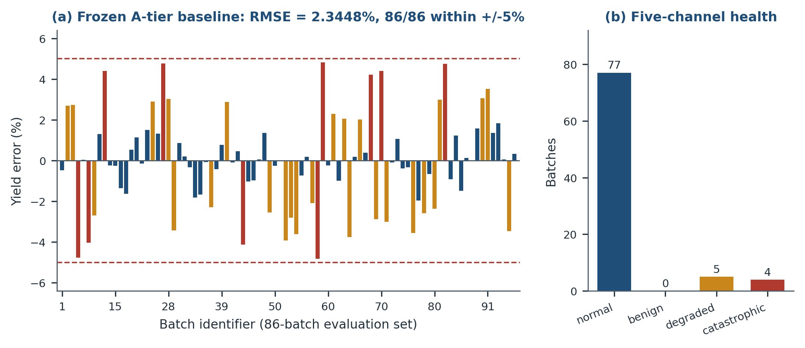
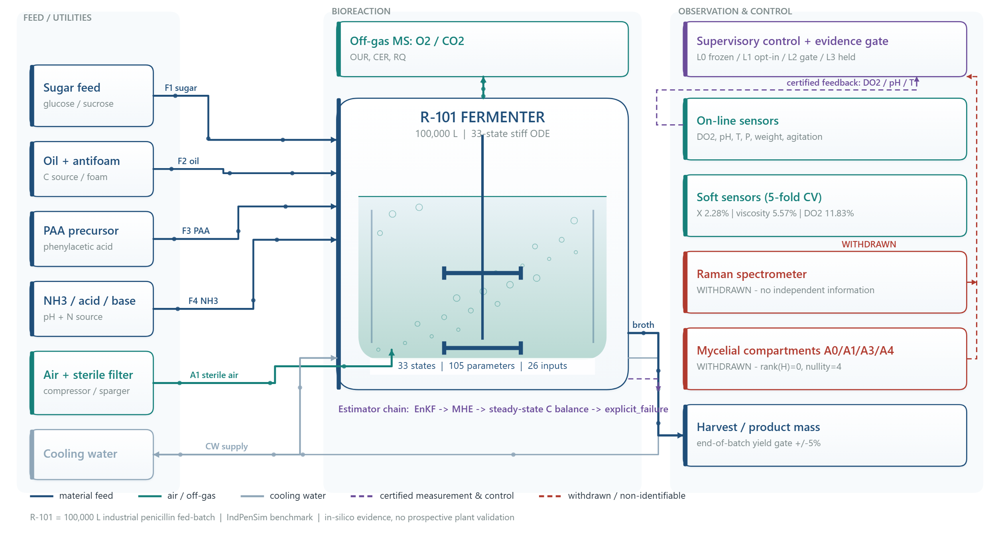
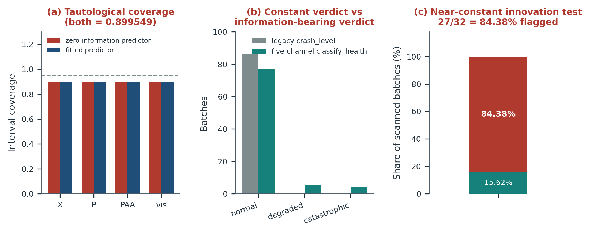
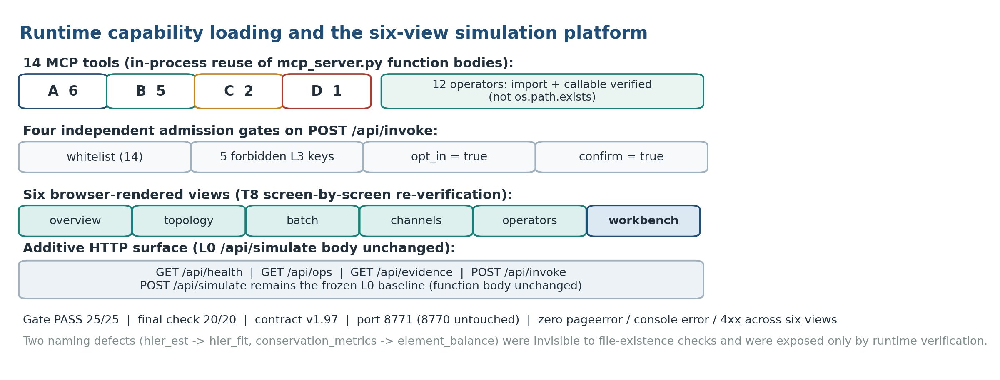

先冻结算子，
再放 Agent 去发现
一次 AI Agent 原生研发仿真算子库与求解器的实证：不是让 AI 替你判断，而是让它执行可判定的事。
确定性底座优先
判断不可外包，判定可以外包。底座与其余三层之间有一条确定性边界：边界以下必须逐位可复现，边界以上才允许探索。
人类 · 写约束，不写算子
目标、红线、验收口径、裁决、promote。边界变更必须人裁决，L3 二次确认未执行。
编排与探索
协作、计算、调度、发现。14 个 MCP 工具、残差发现、并行作业与异步队列。
确定性执行
跑批、扫描、比对、闸门、证据落盘。493 个一次性只读探针，按轮次编号。
先研发并冻结 · 算子 / 求解器 / 数据 / 判据
33 维 ODE、105 参数、58 个底层算子、四环回退链、86 批零回归锚、101 条黄金集哈希。
闭环同化
产量达标从 86/86 掉到 6/86，49/86 批产素归零；葡萄糖闭环 8 个配置全部 −98%~−100%。
V2 扰动注入
全幅 3/6 崩塌、96.06 pp；seed 7 调出的 scale=0.35 在 seed 11 崩到 99.85 pp。18/20 NO_GO。
恒真判据
86/86 批恒返回 normal 的崩溃分类器；对零信息常数预测器也报 0.899549 的覆盖率。
时间线本身
S0/M0 → M1–M5 引擎 → R131–R160 判据 → R163 服务 → R167 平台 → R168 工具包。

人只做一件事：把不确定性写进文档
Agent 可行 = 约束可执行。人类没有写一行求解器代码，但写下了目标、红线、口径、判据与授权点。
GOAL.md · S0 确认单
A/B/C 三档用途分级、±5% RMSE 验收基准、§5 五条红线。
- 不接实产闭环控制
- 不放宽安全与操作窗
- 不做在线 RL 探索
- R166 增补：红线一字未改
PROBLEM.md · M0 冻结
验收标准 v1.0、计量口径与时间戳纪律、6 条 T7 假设登记。
- 化验时间戳用采样时刻
- 4 h 分析滞后单独登记
- glossary.yaml 单位口径
Workflow + PH1–PH5
外部流程契约先于代码；四波执行 T0/T1/T2/T3。
- §S0 / §S1 / §3.4 / §15
- 每轮先写判据再动手
- ROUTE 四选一
契约 / 签核 / 台账
ENGINE_CONTRACT v1.97、M5 签核单、D-2…D-92、五次回溯。
- 结论三处一致
- 未越界声明
- 12 条禁止表述
max|Δ| = 0.00e+00 · 黄金集 101 条 sha256（修改/删除/改名单 exit 1）· acceptance HARD 4 / SOFT 6 · pytest 33 passed in 509.47 s · R166 终检 54/54 · R167 平台闸门 25/25。所有候选默认 opt-in，POST /api/simulate 函数体逐字未改。一轮迭代的原子结构
多轮迭代不等于反复让 AI 改代码，而是有收口件的闭环。点击左侧步骤查看每一环。
01 · 判据先于动作
轮次计划写在 docs/r132_round_plan.md / r134_round_plan.md。判据不合规，本轮不成立；数据窗口登记防止跨轮混用。
判据 = 目标量 + 分母 + 阈值 + 零信息对照 + 证伪位 口径 = 12 批 / 86 批须显式标注，禁止混用 退出码三态 0 / 1 / 2，缺字段显式跳过
02 · 一次性探针
tools/rNNN_<主题>.py 共 493 个脚本，绝大多数是一次性、只读、opt-in、零引擎改动的确定性任务，按轮次编号并在当轮报告引用一次。
r134_zero_regression.py 86 批逐位比对 r157_golden_hash.py 101 条 sha256 r160_i3_coverage_tautology.py 零信息对照 r166_ab_gate.py 预注册 A/B 闸门 r167_platform_gate.py 25/25 逐屏复验
03 · 结构化证据
结果一律落 runs/rNNN_*.json，治理文本中的数字全部从 runs/ 读取，不由模型生成。
runs/r166_zero_regression.json rmse_pct 2.3448, n 86 runs/r156_acceptance.json PASS(hard), 907.9 s runs/r166_ab_gate.json 18/20 NO_GO runs/r167_platform_gate.json PASS 25/25
04 · ROUTE 四选一
PASS / REWORK / CAP / ESCALATE。任何「改善」必须配更简单方法的控制组；排除一个旋钮比确认一个旋钮便宜。
PASS 结论入契约 REWORK 改判据或改机制，注明原因 CAP 登记为已知边界（B-NN） ESCALATE 上送人类裁决（R-NN）
05 · 三层账本与治理同步
轮次报告、债务台账、契约版本行、幂等治理文本同步（46 项精确替换、三次复跑零写入、CRLF/LF 原样）。
knowledge/ledger.jsonl 111 行 · source: agent runs/ledger.jsonl 136 行 ENGINE_CONTRACT.md v1.97 · 96 条版本行 docs/rNNN_round_report.md 36 份 docs/rNNN_debt_ledger.md 23 份 · D-2…D-92
06 · 只读回溯
docs/goal_backtrace_check_v3/v4/v5.md 五次全量回溯，明示「只读回溯，不擅自推进」；R166 终检 54/54 PASS。
v4 首次对标 GOAL §2，产出 D-88 / D-89
v5 首次把 platform/ 代码实体与 cap 治理条件
纳入同一完备性表（R166 终检 54/54）恒真的判据等于没有判据
86/86 恒返回 normal → 五通道 classify_health：77 / 5 / 4。
相关系数不是量纲的证据
pat × 1000 后 r 逐位相同；PLS 量纲差 1000 倍隐身。
正面结论整条撤回
41 批中 29 批化验是占位值，A2 20.47% 劣于 C0 10.29%。
否证自己的预判
sd 跨 0.0015217 即从 −100% 回到 +1.33%，改判「阈值隔离的深盆地」。

Agent 研发出的确定性资产
每项成果都有判据来源、研发轮次与 runs/*.json 证据。点击标签切换查看。
33 维刚性 ODE · 105 参数 · 26 输入
- BDF 积分 rtol=1e-3 / atol=1e-6 / max_step=0.01 h，0.2 h 采样分段
- 开环回放 V3 被控量序列，前向 MV 时序修复对齐 MATLAB f_input
- 产量 RMSE 2.3448%、86/86 ±5%、零回归 max|Δ|=0
- 同句口径：每批用各自标定参数，是重建一致性，不是前瞻预测
- 产量指标对 P 形状失明（相关 +0.011）→ 补 P relRMSE 中位 15.6%、峰比 1.060

58 个底层算子 + 18 个高层能力
- operator_kit：14 个 A/B/C/D 能力 + 4 个 v2 扩展 + 21 个 MCP 工具，29/29 PASS
- 四环回退链：enkf_health / degradation_guard / mhe_step / steady_state_baseline / resolve_tier
- 度量算子：轨迹级、C/N 元素平衡、形状、五通道健康分级
- 故障注入 7 模式；寻优 5 MV × Nelder-Mead（max_yield / track_target）
- 不变量：不复制实现、不改旧目录一行、失败显式、L3 五键保持拒绝

可交付的，与不可辨识的
- 观测器 v2 双通道：log(X_est/X_model) = a + b·log r_OUR + c·log r_CER，批级 5 折 CV
- 机制：CER 斜率 1.005（R² 0.699）对 OUR 1.420（R² 0.433）→ OUR 定标度、CER 定时间形
- X 中位 nRMSE 3.17%、86/86 <15%；X 24.58%→2.28%，粘度 19.69%→5.57%
- P / PAA 劣于 A 档 ⇒ NOT_IDENTIFIABLE；菌丝区 H_assim rank=0 / nullity=4 ⇒ 不作交付宣称

6 → 9 → 12 → 14 个 MCP 工具
- L0 冻结基线 / L1 opt-in 候选 / L2 证据闸门 / L3 切换决策（未执行）
- platform/ 六视图 + GET /api/ops、/api/evidence、POST /api/invoke；/api/simulate 函数体逐字未改
- R167 闸门 PASS 25/25（8771 端口，95.8 s）；platform_v2：97 参数 / 40 通道 / 0.2 h / 异步作业
- 闸门跑次须注明：fast 18/18、设计文档 24/24→27/27、R167 25/25 非同一跑次

系统已有的真实图集
过程图、结果图、浅色成果卡 / 信息图页面与平台真实运行截图。点击任一图片可放大浏览。
三色状态、七条准则与未闭合项
把三色写清楚，比多报一个漂亮数字更重要。
PASS / 已交付
A 档 86 批 · B 档 X + 粘度 · 四环回退链 · MCP 14 工具 · platform 六视图 · platform_v2 · operator_kit 29/29 · 论文一致性 15/15。
提案 / 待裁决
候选基线 v2（ph_fix=1 + 5 批 mup 重标，默认仍 ph_fix=0）· L3 四项切换 · V1+ 立项（菌丝形态数据、留出批次前瞻评估、第二案例 E10）。
已否决 / 否定结论
闭环同化 6/86 · 葡萄糖闭环全崩 · Raman/PAT · A2 支配结论撤回 · I3 覆盖率恒真 · P/PAA 与菌丝区不可辨识 · V2 注入 18/20 NO_GO。
而是 92 条债务编号、32 条纪律，以及那条次序。值得人亲自写下的，是约束；值得 Agent 反复执行的，是判定。